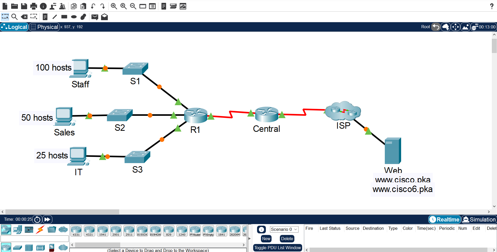

Growth
Learning to Interact...
My first year attending RRC in the BIT program has showed me that I have come a long way since my first year in post-secondary. When I was in U1 at the University of Manitoba, I hardly interacted with my instructors. I was so intimidated by the large classroom setting that I did not bother to reach out to my instructor when I needed help. Fast-forward to today and I have shown that I am comfortable speaking to my instructors on a 1-on-1 basis and in a classroom setting. The instructors at RRC make sure to let me know when they are available and it is very easy to approach them. I am confident that going forward I can look to them for help if I am struggling to understand new concepts.
Inspire Conference 2022...
The Inspire Conference was an experience where I gained so much knowledge about what people in the IT field do and how the industry works. It was an event that took up the entire day and it was constantly providing me with new knowledge that I can use going forward in my future career. The networking lounge was where I was able to shine. The networking lounge gave me the opportunity to ask people from various companies any questions I had about their job. It was a place where I was able to showcase my communication and networking skills and I was even asked by a manager at Shared Services Canada to email my resume to him. I learned a lot about companies that I have been interested in working for and am looking forward to getting into the application process for these companies.
New Skills
Tailoring my Resume and Cover Letter to a Job Ad...
One of the most useful assignments that I had to do in Professional Development 2 was the Resume and Cover Letter assignment. For this exercise, we had to modify our resume and write a cover letter based on requirements stated in a specific job ad. We needed to analyze the job ad for certain points that they were looking for and apply them to our application package. Being able to do this for future positions at different employers will be very important moving forward. It will maximize my opportunity for employment and will present myself as a more attractive candidate for the job.
Working as a Team in a Virtual Setting...
In our Object-Oriented System Analysis course, we had several assignments where we had to work as a team to go through the different steps a project would go through in its development process. I had a very fun time working with this group of classmates as we came together and presented our unique ideas to complete the different exercises all without having to meet in person. In the future, it is likely that jobs will accomodate remote work, so meetings like the ones we had throughout the course will likely be the norm. These assignments taught us the nuances of project management as well as performance management when distributing work as evenly as possible.
Programs and Systems
Programming in Visual Studio...
Automotive Group ApplicationThis Programming 2 course was spent working completely on coding in Visual Studio in the C# language. Our assignments consisted of progressively adding more and more functionality to an application that would be useful in a car dealership work setting. The program was very fun for me to complete as it gave me a glimpse into what we could potentially be creating as programmers. There was a lot of critical thinking involved with these assignments as we constantly had to figure out the most efficient ways to get the program to work. I am very proud of my accomplishments in this class and it shows with my assignments always being evaluated with high marks. It was not easy though, since I spent countless hours troubleshooting errors and problem solving complex new ideas like data bindings and binding sources. I am glad that I have grown to be comfortable coding in C# this term as we used it throughout group activities and assignments.
Learning to Manage and Manipulate Data...

This is a screenshot of the Oracle SQL Developer Database that we used in our Database Management class. Database Management taught me a lot about the various functions and queries in SQL that I could use when working with a database. Most modern companies have some sort of database, so it is essential for me to understand how to view, manipulate, and analyze the data that is stored within a database. Being someone who enjoys working with numbers and equations, it was fun for me to have to visualize tables in my head to generate a query that provided me with the required information. I utilized a lot of systems thinking to figure out what functions were appropriate for what I needed.
Cisco Network Configuration...
This screenshot is of a Packet Tracer topology from my Networking class. In this class, I was finally able to learn about networks and what allows me to connect to the internet at home. I always wanted to understand this topic more because I wanted to be able to optimize my home network myself. In the Packet Tracer activities that we did throughout the course, we would troubleshoot different connectivity issues and come up with solutions. We also looked into various topics about home networks like security, cabling, and the different layers that data goes through to get to where it needs to go. There were a lot of commands to memorize in this course so I constantly had to study and practice using the different commands for routers, switches, and end devices. I am looking forward to using this new knowledge at home to enhance my gaming experience, and to further my career in the IT field.
Developing Webpages using HTML, CSS, and JavaScript...
Finally for term 2, an example of my learning in Web Development is what you see in front of you (the whole web page). Learning how to code HTML, CSS, and JS will be very useful to me not only in my career but also in my hobbies. I enjoy designing things whether it be logos, t-shirt designs, stickers, and other various customized items. This class allowed me to express my creativity in design, giving me control over the content of a webpage (HTML), the styles applied to it (CSS), and its interactivity (JS). I will be able to utilize the knowledge I have gained in this course fully when creating websites for my friends, myself, or future clients. It was exciting to be able to have my design hobby and coding career join forces to create a project like this webpage.